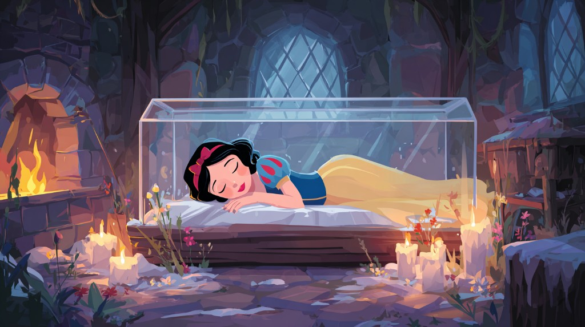

Snow White
The Queen, jealous of Snow White's beauty, gave her a poisoned apple. She bit it and fell into a deathlike sleep. The seven dwarfs, returning from the mine, found her so. Unable to bear the thought of burying her in the dark earth, they laid her in a crystal coffin and set it in the stone chamber, with candles and flowers around her.
Night after night they kept vigil. They were anxious, helpless — yet they would not leave her. She had come to their home; she had cared for them. Now they would care for her.
What did each of them do? Tap below to hear their stories.